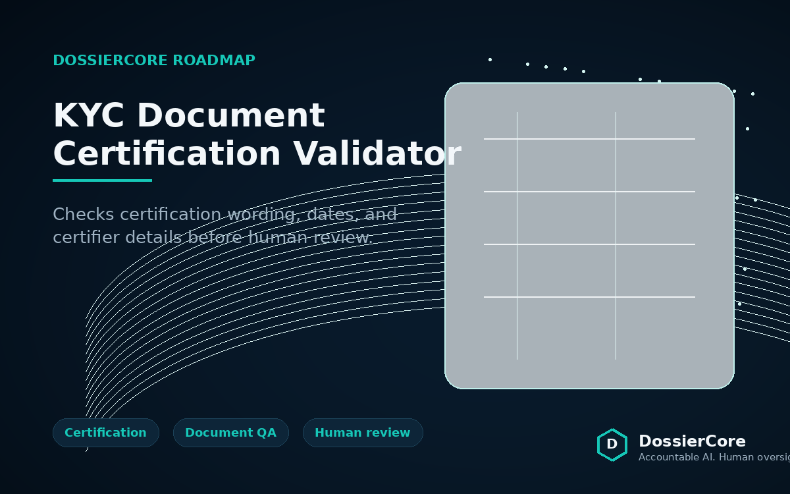
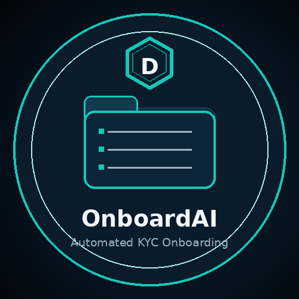
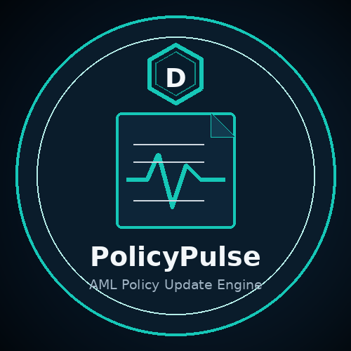
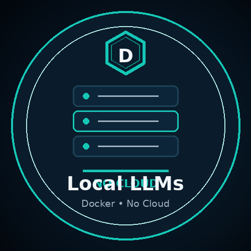
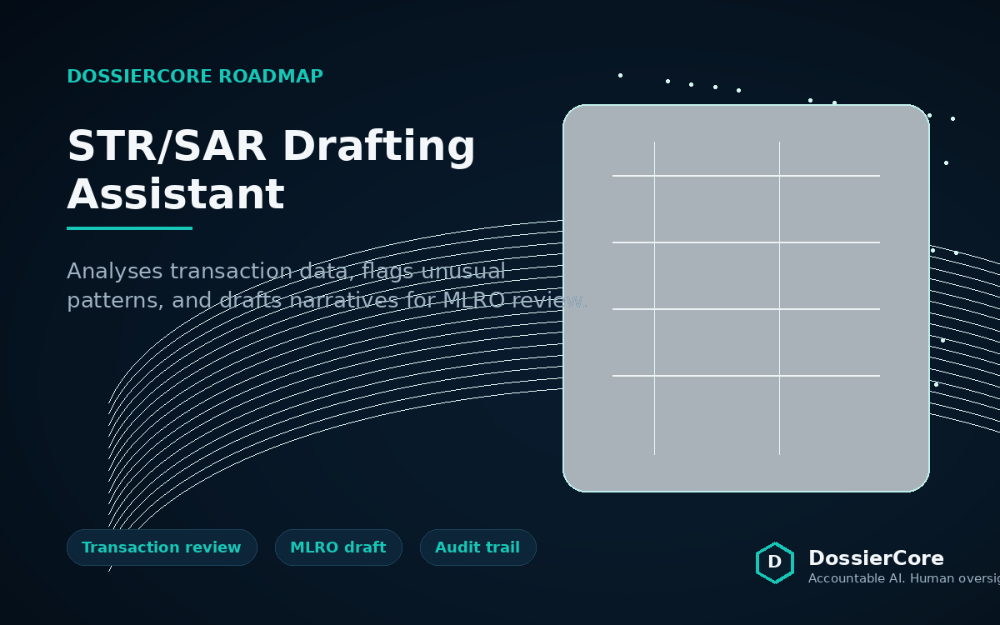
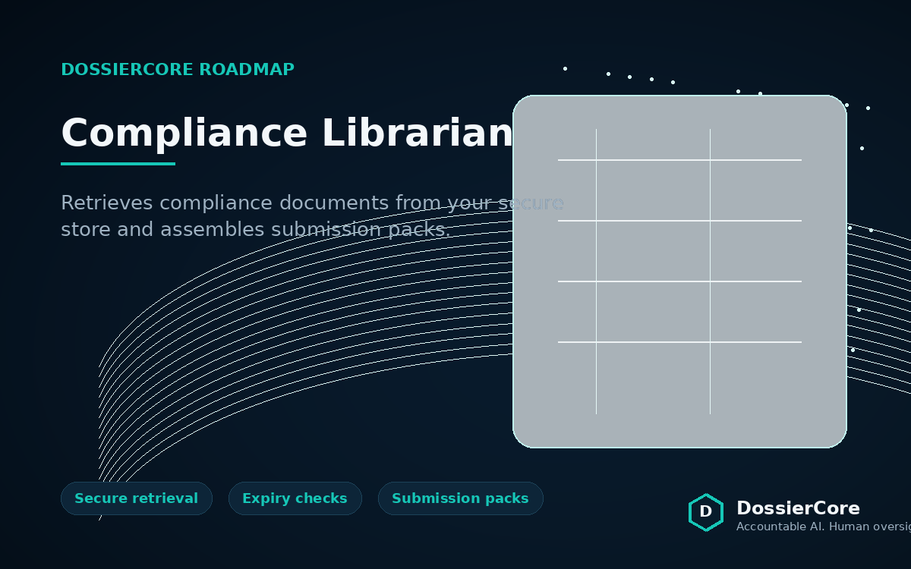
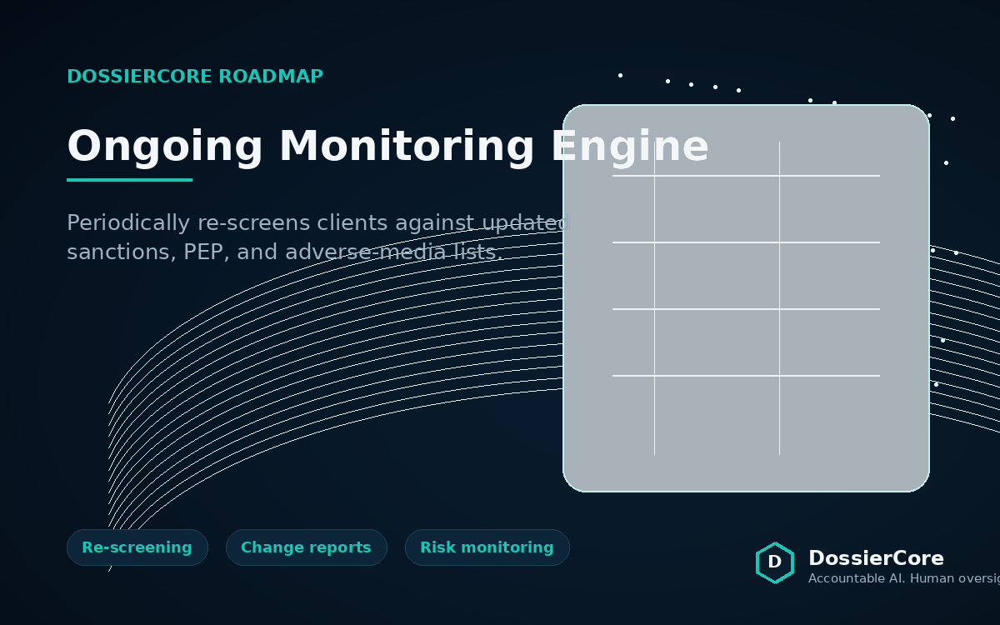

KYC Document Certification Validator
Automatically checks certification wording, dates, and certifier details — flags non‑compliant documents before human review.
Learn more →
Drop a client pack into a folder. We check document completeness, extract identity & risk data, run sanctions/PEP screening, and deliver a professional Word report. Runs entirely offline on your hardware.
Learn more →
Drop your AML policy plus a new regulatory notice. Get a section‑by‑section comparison, change flags, and a reviewer checklist with diffs and citations. Learns from past regulations via a local vector database.
Learn more →
Both tools run on Llama 3.1, OCR, and containerised deployment. You stay in control – your data never leaves your infrastructure. Ready to pilot on your own hardware.
Our service model →All tools share the same philosophy: local first, human in the loop, no vendor lock‑in. Here's our roadmap.

Automatically checks certification wording, dates, and certifier details — flags non‑compliant documents before human review.
Learn more →
Analyses transaction data, flags unusual patterns, and drafts suspicious transaction report narratives for MLRO review.
Learn more →
Chat‑based assistant that retrieves documents from your secure store, checks expiration dates, and assembles submission packs.
Learn more →
Periodically re‑screens clients against updated sanctions/PEP lists and adverse media – reports only what’s changed.
Learn more →Chat‑based assistant that retrieves the right documents from your secure store, checks expiration dates, and assembles submission packs on request.
Learn more →Pulls data from multiple compliance sources and drafts ready‑to‑review board packs and management information reports.
Learn more →